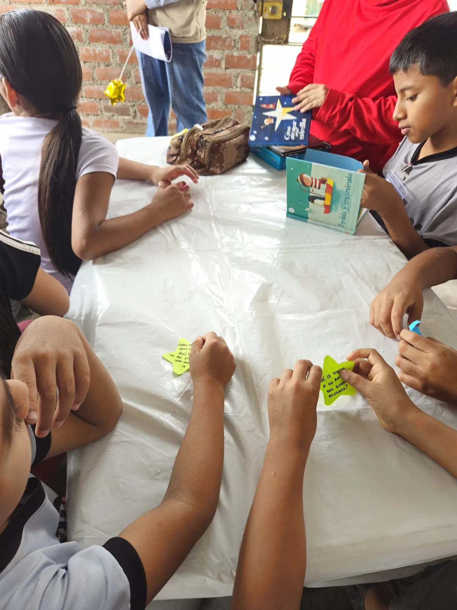

Comprensión y creatividad
Lectura compartida, preguntas, dramatización y producción creativa.
Talleres
Experiencias participativas que conectan lectura, expresión, emociones y vínculos familiares.

Educación y bienestar
Lectura compartida, preguntas, dramatización y producción creativa.
Identificación y expresión de emociones, escucha y convivencia.
Estrategias para motivar la lectura en casa y compartir el proceso de aprendizaje.
Edición 2026–2027
La programación de Soñando Libros contempla talleres extracurriculares y un encuentro con madres y padres. Estos espacios complementan la lectura y acompañan el desarrollo de los estudiantes.
Para conocer las actividades disponibles o coordinar un taller para una institución, comunícate con el equipo.
Consultar un taller